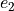

Link Stream Anomalies
The anomalies are generated seperately, by specifically taking the graph and timeserie anomalies.
Since the “normal” and “anomaly” link-streams are independently uniformly picked, we need to check that no multiple edges are created when adding the “anomaly” to the “normal” link-stream. When a multiple edge is detected, random swap targetting those specifically are made to ensure that we have a simple link-stream. A final pass of random swap is made to ensure that no multiple edges happen in the total graph.
Getting rid of multiple edges
When multiple edges are detected, we do the following:
For each multiple edge , do:
Choose between “normal” and “anomaly” link-stream with probability 0.5
In chosen link stream, pick an edge  uniformly at random that satisfies the following conditions:

swapping and reduces the number of multiple edges by at least 1
If swap is accepted, swap and , otherwise reject swap and pick another edge